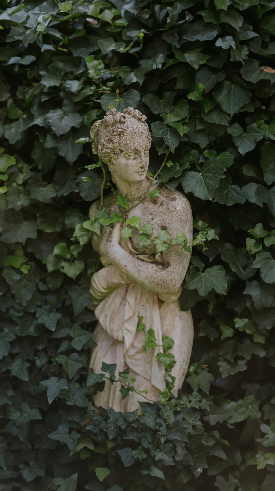
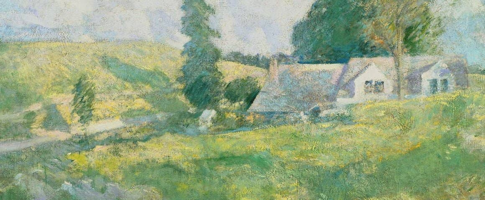

A Working Archive
Pages of Work
A collection of sites, publications, projects, essays, and digital work gathered in one place.
 Brewteronomy
Cheers & Amen
Beer is a gift from God, given for his glory and our joy — and we should thank him for it
Brewteronomy
Cheers & Amen
Beer is a gift from God, given for his glory and our joy — and we should thank him for it
 Publication
Christ Is Lord
Christian cultural engagement, essays, and public theology.
Newsletter
Bishop's Commonplace
Notes, fragments, observations, and links from the desk.
Publication
Christ Is Lord
Christian cultural engagement, essays, and public theology.
Newsletter
Bishop's Commonplace
Notes, fragments, observations, and links from the desk.
 Publication
Story Warren
Collected writing by Josh Bishop at Story Warren.
Publication
Story Warren
Collected writing by Josh Bishop at Story Warren.

Poem The Rabbit Room An Unexpected Specter, published through Rabbit Room Poetry. Essay The Rabbit Poetry On Creation, First and New, published by The Rabbit Room.
Poem North American Anglican Summer Afternoon, published at The North American Anglican.
Subscribe
Subscribe for new writing, reflections, and updates.